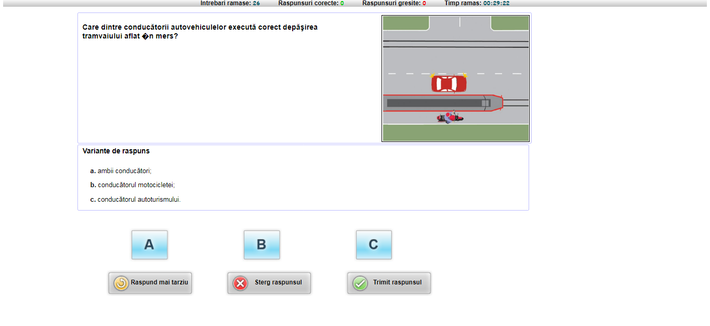
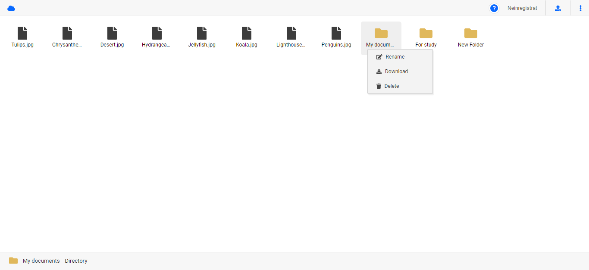
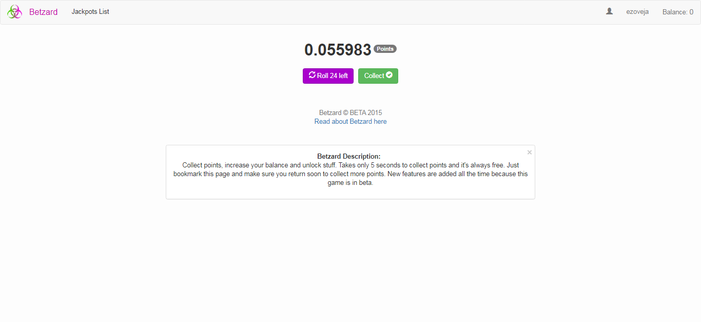
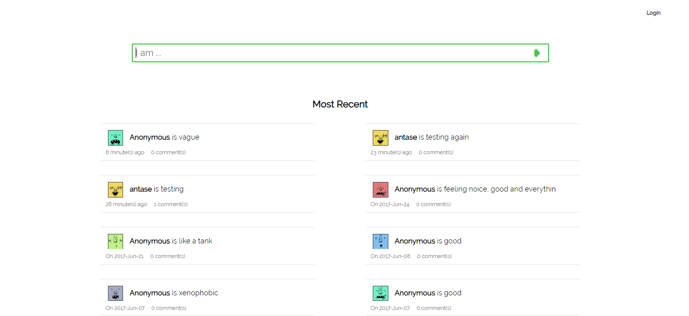
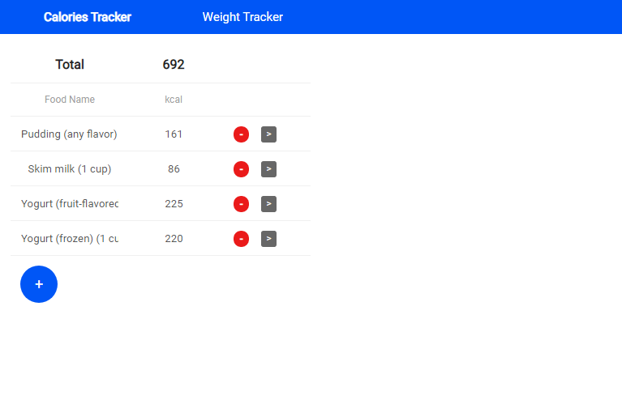

Fullstack Developer
Developer. Student. Making software on Web, Android and Desktop.
Main technologies I use: PHP • Android Studio • .NET
Projects
PHP projects
Chestionare Auto
Platform to simulate driving school theory exam. Built in PHP5 updated to support PHP7. Theory is fetched from MySQL db.
Cloud File Storage & Manager
Luck based points collecting game
Roll and collect as many points as possible. Limited number of rolls and restricted time interval to collect. Account created automatically on page load. Users and points are stored in MySQL database.
Share status - Mini Social Network
Small social platform to share status and talk about it. Every status can be commented on. All posts are public. Built in PHP and MySQL.
Angular+Node.js projects
Multi Health Tracker
Log information such as weight or calories intake. Built in ANGULAR 9 and Node.js
